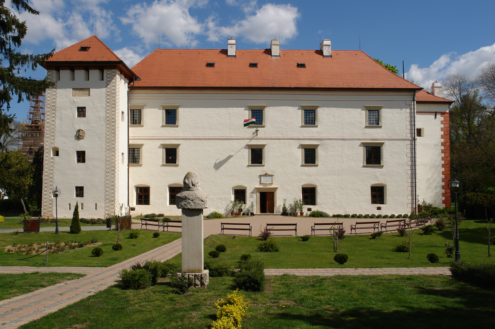
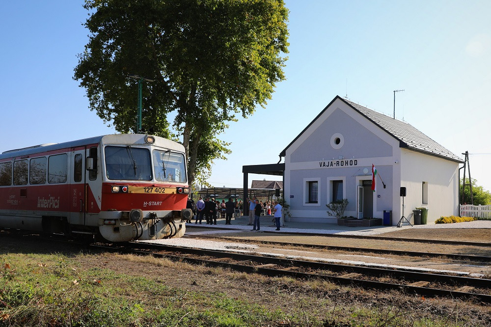

Digitális TémaHét
A Digitális Témahét Magyarország legnagyobb digitális pedagógiai eseménye. 2016-ban indult útjára az Emberi Erőforrások Minisztériumának kezdeményezésére. Az ebben a tanévben tizedik alkalommal, a Belügyminisztérium támogatásával, az Ökumenikus Segélyszervezet az Oktatásért Alapítvány szakmai koordinációjával megrendezésre kerülő Digitális Témahét célja, hogy a digitális eszközökkel támogatott projektpedagógia és innovatív pedagógiai módszerek terjesztésén keresztül Részletek


A legjobb választás a Zöld Tech
üëâ Mi√©rt? Gyorsan kivitelezhet≈ë ‚Äì nem ig√©nyel programozást vagy bonyolult eszk√∂z√∂ket. Csak kutatás + √∂tletel√©s + prezentáci√≥ ‚Äì k√∂nnyen befejezhet≈ë pár √≥ra alatt. Sok kreativitást enged ‚Äì nem kell konkr√©t m≈±k√∂d≈ë term√©ket l√©trehozni, el√©g egy j√≥ koncepci√≥. Egynapos menetrend: ‚è∞ 9:00 ‚Äì Bevezet√©s üé§ (Projekt bemutatása, csapatok kialak√≠tása) ‚è∞ 9:30 ‚Äì Kutatás üîç (Z√∂ld technol√≥giák, okoseszk√∂z√∂k, inspiráci√≥) ‚è∞ 10:30 ‚Äì √ñtletel√©s üí° (Milyen eszk√∂zt vagy appot terveztek?) ‚è∞ 11:30 ‚Äì Látványterv k√©sz√≠t√©s üé® (Plakát, prezentáci√≥, Canva/Figma terv) ‚è∞ 13:00 ‚Äì Prezentáci√≥k k√©sz√≠t√©se üìù (√ñtlet √∂sszefoglalása) ‚è∞ 14:00 ‚Äì Prezentáci√≥k bemutatása üé§üèÜ (Csapatok el≈ëadják az √∂tletet, szavazás a legjobbra) üî• √ñsszegz√©s: Egy nap alatt is izgalmas, látványos √©s tanulságos projektet kaptok, ami nem ig√©nyel el≈ëzetes technikai tudást, de m√©gis fejleszti a digitális k√©szs√©geiteket! üöÄüåç R√©szletek
Táblázat
| Összevont fejléc | |||
|---|---|---|---|
| Oszlopcim1 | Oszlopcim2 | Oszlopcim3 | |
| sorcim1 | adat | adat | adat |
| sorcim2 | adat | adat | adat |
Kijelölhető lista
w3-hover-color a listaelemek formázása
- hétfő
- kedd
- szerda
- csütörtök
- péntek
Nyár 2025

Ópályi

Vaja

Rohod
Tuzsér

Jármi

Nagyecsed
- alma
- körte
- citrom
- narancs